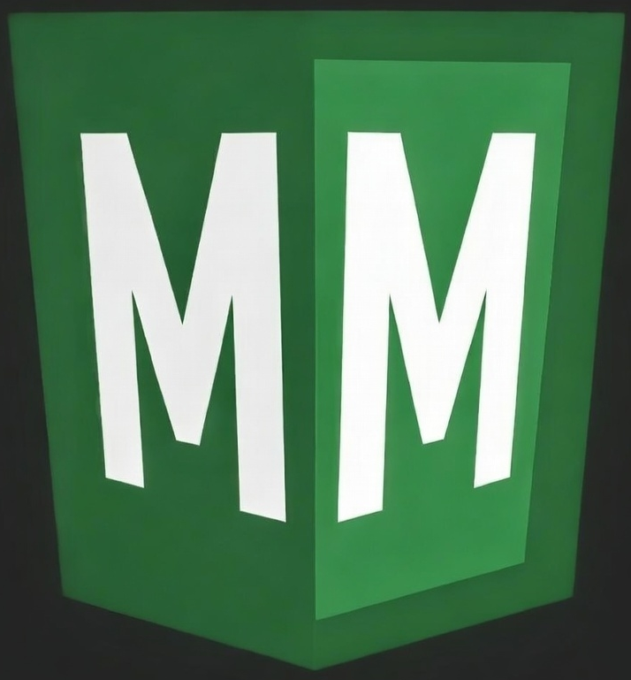
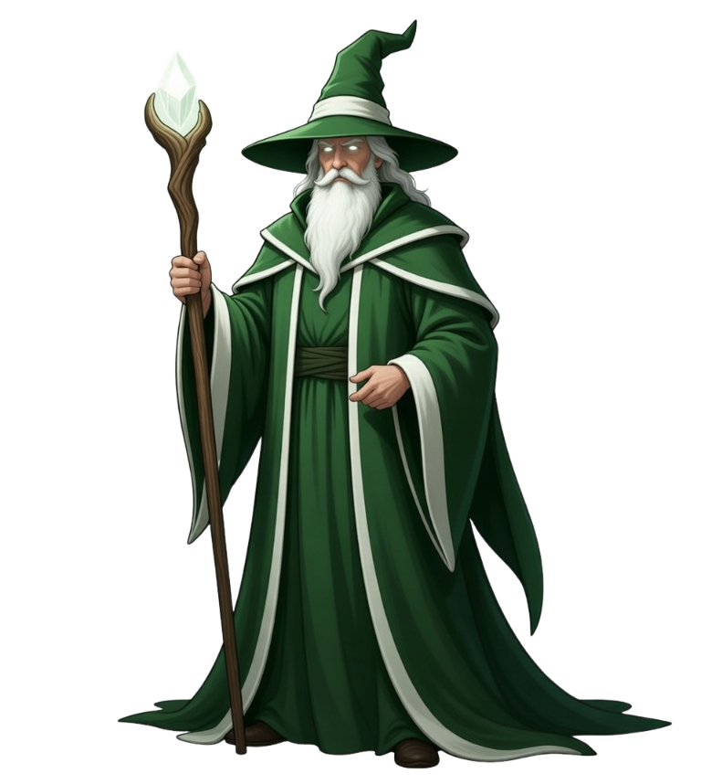
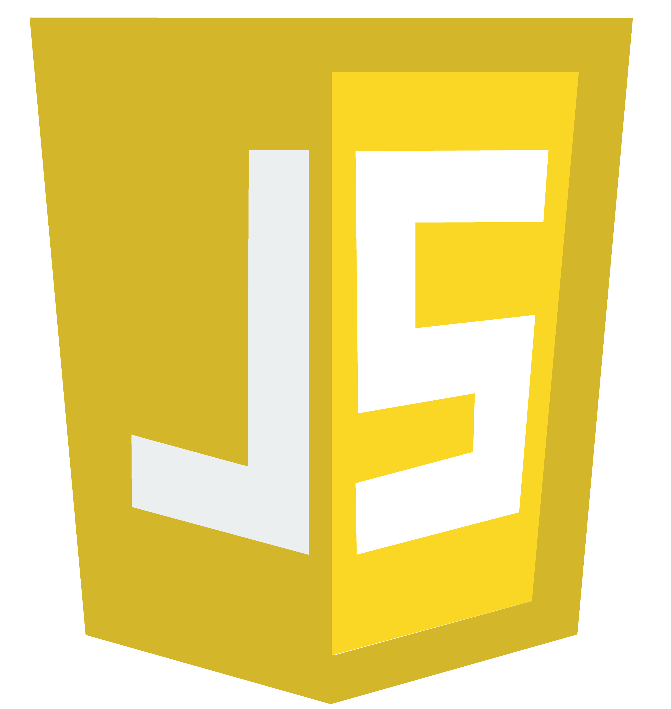

Transformando Ideias em Interfaces Sofisticadas
Focado em criar soluções modernas com front-end e back-end integrados, priorizando boa experiência do usuário e customização.
Entrar em contatoFocado em criar soluções modernas com front-end e back-end integrados, priorizando boa experiência do usuário e customização.
Entrar em contato

Estratégia clara para o seu site, alinhando objetivos do negócio, perfil do público e estrutura das páginas para criar uma experiência eficiente, intuitiva e orientada a resultados.
Design alinhado com as tendências atuais do mercado e com o que o cliente deseja, unindo identidade visual, usabilidade e objetivos do projeto em cada detalhe.
Código limpo, semântico e bem estruturado, garantindo manutenção simples, performance consistente e uma base sólida para evolução do projeto.
Agilidade na entrega com soluções objetivas que fortalecem sua presença digital, melhoram a experiência do usuário e apoiam o crescimento do seu negócio.
Sua página funcionará em computadores, tablets e dispositivos móveis, com adaptação de layout para manter o visual perfeito em qualquer resolução.
Página focada em apresentar sua oferta de forma direta e conduzir o visitante para a ação, como solicitar contato, orçamento ou compra.
Saber maisUm espaço online para exibir seus produtos ou serviços com organização e clareza, facilitando o contato com o cliente e focando na decisão de compra.
Saber maisEstou iniciando minha carreira como dev full stack, com dedicação em construir produtos úteis, acessíveis e preparados para crescer. Tenho interesse em projetos que exigem organização, performance e atenção aos detalhes.
 HTML
HTML
 CSS
CSS

JSSabe quando entramos naquele bolão da mega no fim de ano? ou quando estamos se sentindo com sorte e queremos fazer um jogo, mas não vem nenhum número na cabeça... Essa é a solução definitiva! um gerador simples e visual para você confiar na sua sorte e jogar os números aleatórios.
ConhecerEsse projeto foi desenvolvido durante as aulas do DevClub, tem design simples focado em funcionalidade demonstrando o uso do Javascript em aplicações web.
ConhecerProjeto criado nas aulas do Devclub. Uma aplicação web simples que gera números aleatórios dentro de um intervalo definido pelo usuário. O JavaScript é responsável pela lógica do sorteio, capturando os valores inseridos, gerando o número aleatório e exibindo o resultado na tela de forma dinâmica. O projeto foi criado para praticar lógica de programação, manipulação do DOM e interação com o usuário.
Mais um projeto das aulas do DevClub. Um jogo simples que pode colocar em prática muitas funcionalidades do Javascript e integração com CSS. O projeto foi criado para praticar lógica de programação, manipulação do DOM e interação com o usuário.
Vamos conversar sobre seu projeto e tirar a ideia do papel.